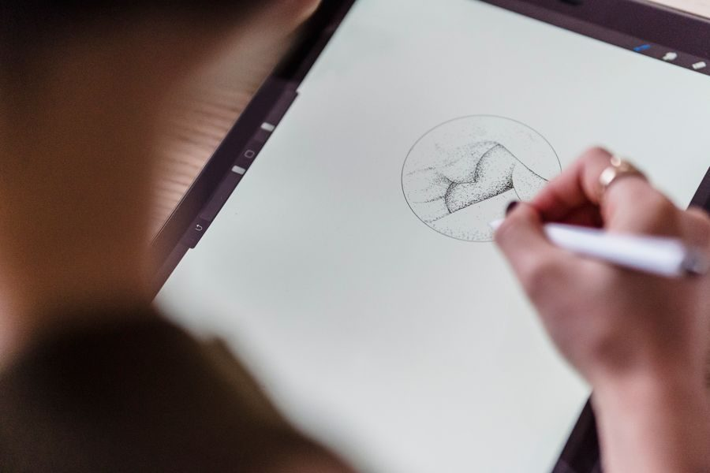
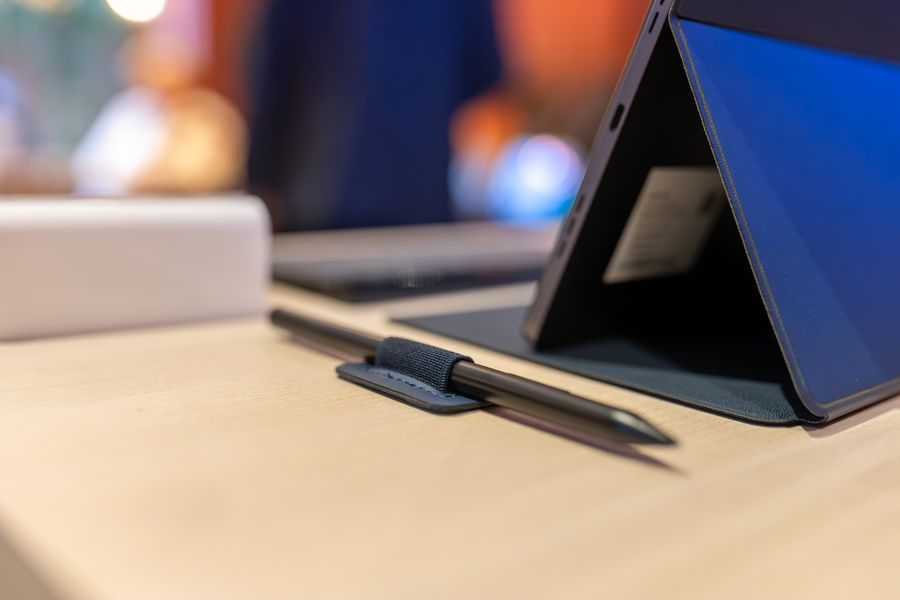

Los mejores en calidad-precio
El mejor
Imagen orientativaLa mejor · para trabajar y dibujar
Apple iPad Air
A favor
- Potencia de sobra para dibujo y edición
- Años de actualizaciones garantizadas
- El mejor lápiz del mercado, con muy poco retardo
En contra
- El lápiz y el teclado se compran aparte y no son baratos
Si vas a dibujar, tomar apuntes o editar, es la que menos se te va a quedar corta con los años.
Ver precio actual en Amazon
¿Te lo estás pensando? Añádelo al carrito en Amazon y decídelo con calma: te avisan si baja de precio y lo tienes a mano cuando te decidas.
No ponemos precios porque cambian cada día. Lo ves actualizado al entrar.
Gama media
Imagen orientativaGama media · lápiz incluido
Samsung Galaxy Tab S9 FE
A favor
- Viene con el lápiz en la caja: no hay sorpresa de precio
- Resistente al agua, algo raro en tablets
- Pantalla grande y buena
En contra
- Menos potente que una iPad Air
La mejor opción si quieres tomar apuntes a mano sin pagar el lápiz aparte. Con Android, la más redonda.
Ver precio actual en Amazon
¿Te lo estás pensando? Añádelo al carrito en Amazon y decídelo con calma: te avisan si baja de precio y lo tienes a mano cuando te decidas.
No ponemos precios porque cambian cada día. Lo ves actualizado al entrar.
Gama mediaImagen orientativaGama media · más pantalla por menos
Xiaomi Pad 6
A favor
- Pantalla de 120 Hz a precio contenido
- Buenos altavoces para ver series
- Construcción metálica
En contra
- El lápiz se vende aparte
- Menos años de actualizaciones
Para consumir contenido es donde más pantalla y fluidez consigues por el dinero.
Ver precio actual en Amazon
¿Te lo estás pensando? Añádelo al carrito en Amazon y decídelo con calma: te avisan si baja de precio y lo tienes a mano cuando te decidas.
No ponemos precios porque cambian cada día. Lo ves actualizado al entrar.
El mejor baratoImagen orientativaLa mejor de las baratas
Xiaomi Redmi Pad SE
A favor
- Suficiente para ver vídeo, navegar y leer
- Ranura microSD para ampliar
- Muy barata
En contra
- No es para juegos exigentes ni edición
Para el sofá, la cocina o para los niños. Gastar más aquí no mejora nada de lo que le vas a pedir.
Ver precio actual en Amazon
¿Te lo estás pensando? Añádelo al carrito en Amazon y decídelo con calma: te avisan si baja de precio y lo tienes a mano cuando te decidas.
No ponemos precios porque cambian cada día. Lo ves actualizado al entrar.